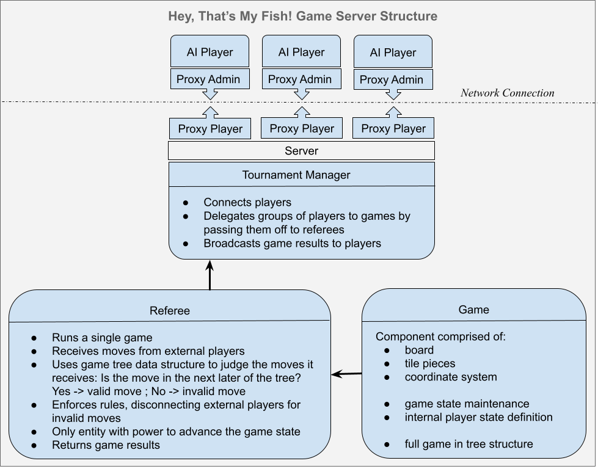
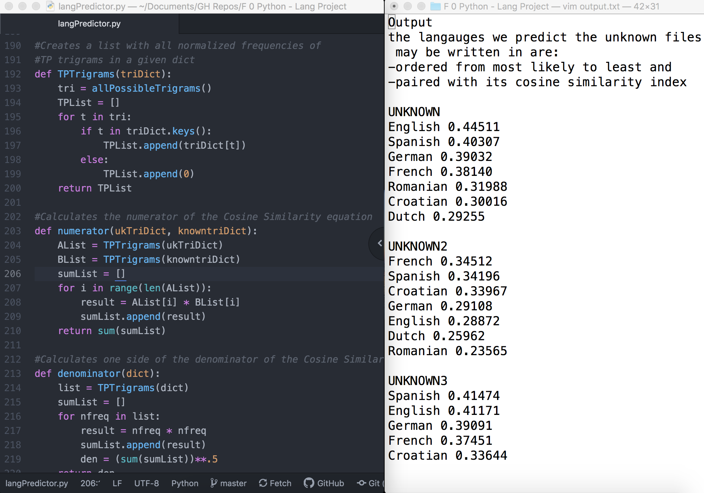

GH repos of the following projects and more are available upon request
Fish Game Server

CS 4500 Software Development - Fall 2020
Roughly 7,375 lines of Java
Project Description: Design and implement a gaming system that hosts games of Hey, That’s my Fish! and provides servers to which hackers can connect AI players to compete in tournaments. Project implemented from the bottom up starting with game pieces, full game and tournament play, and finally the client/server components. Project completed while fully participating in Northeastern’s key undergraduate software development course — without enrolling. That’s correct, you will not find CS 4500 on my transcript. With the permission of Professor Felleisen, I partook in this course after being told I didn't meet the requirements to.
Many undergraduates consider this course the most challenging of their career and I simply did not wish to miss out on the incredible learning experience this course presented. According to Professor Felleisen, I earned an A for the equivalent MS course.
Project highlights:
- Pair programming collaboration with Brock Fenbert
- Wrote detailed design documents, defended design choices
- Performed two code walks for class feedback and implemented feedback
- Integration tests for each milestone; unit tests for each file
- A complex tree data structure to lazily generate future game outcomes for strategizing and determining game rules mid-game
- Implemented a potential hacker’s AI player-software using the minimax algorithm strategy
- Designed and wrote player API protocol documentation
- Made design decisions mindful of potential security threats to internal system
- Implemented remote-proxy pattern, bringing together the server-side game system and client-side AI players
Language Predictor Tool

DS 2000 - Spring 2018
Python and Statistics
Project Description: Build a tool that predicts which language a document is written in given a sample set of documents whose languages are known.
This was my first project writing in Python and I thoroughly enjoyed working on a project that married my love of languages with my love of coding.
In hindsight, the program takes quite a long time to run (~40 seconds) with only the small batch of input files given and thus could be implemented more efficiently with the few extra years of experience I now have.
Method:
- Create two dictionaries: one for files we do know the language of, and one for unknown files
- Read in the input files
- Delegate and Store each input file as such:
- key = [file name] or [unknown#] where the # corresponds to the order with which the tool encountered the unknown files
- value = one long string that is the contents of the file
- Clean all data (removing punctuation and spaces)
- Collect and analyze the frequency of trigrams (3-character subsequences) in the files
- Normalize the trigram frequencies
- Calculate the cosine similarity between trigram collections of unknown files and known files
- Match unknown documents with known documents based on the range of most similar to least similar
- Organize output and store in output file indicated in sys args
Light 'Em All

CS 2510 Fundamentals of CS II - Spring 2018
Java and Graph Theory
Project Description: Implement Light ‘Em All, a game where the player connects wires by rotating tiles and moves the power station across the wires until the entire grid is connected and lit. The catch: The power station is weak and only exerts power up to a particular radius from the station, so once all the wires are connected the user must use the arrow keys to find a point in the grid where all edges of the grid are reachable by light.
Project highlights:
- Determined the minimum spanning tree of the game's underlying graph using Kruskal’s algorithm to generate the continuous wire grid before randomly rotating tiles for gameplay
- Calculated radius of power by finding the furthest distance between any two nodes and cutting that in half
- Used breadth first search to traverse tiles stemming from power station and light only the tiles within the radius of power. Implemented gradient color to make closer nodes brighter than further nodes.
- Implemented the option to generate a graph with a bias toward more horizontal or vertical wires by increasing the weight of horizontal or vertical edges respectively
- Implemented hexagonal version of the game where tiles are 6-sided